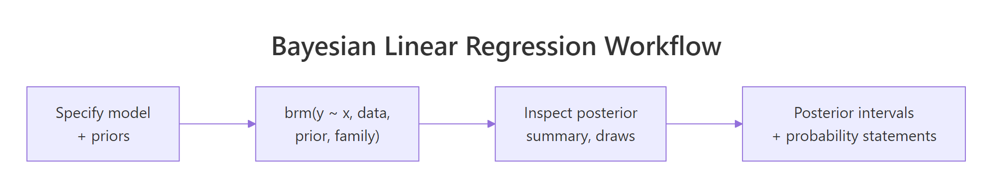
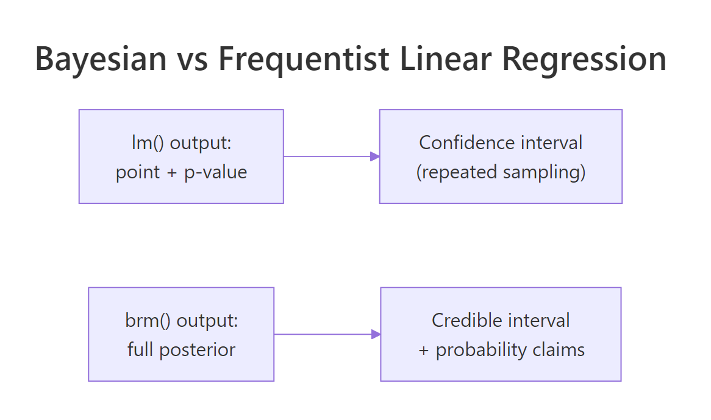

Bayesian Linear Regression in R: Get Uncertainty Estimates lm() Cannot Give You
A frequentist lm() fit gives you a point estimate, a standard error, and a 95% confidence interval that is technically a statement about repeated sampling under the null. A Bayesian linear regression gives you the full posterior over every coefficient, lets you compute the probability that a coefficient is positive (or above any threshold), and propagates the parameter uncertainty into predictions. The math is the same; the output is more useful. This post fits a Bayesian linear regression with brms end to end, covers reading the posterior, generating prediction intervals, and the situations where the Bayesian version is meaningfully better.
What does Bayesian linear regression give you that lm() cannot?
lm() returns a single best estimate for each coefficient plus a standard error. A 95% confidence interval is computed from those, but its interpretation is "if we repeated the study many times, 95% of such intervals would contain the true value." Most stakeholders read it as "the coefficient is in this range with 95% probability," which is the Bayesian interpretation, not the frequentist one.
A Bayesian linear regression returns a posterior distribution over each coefficient. The posterior is a probability distribution that says exactly where the parameter is, given the data and your prior. From it you compute:
- A credible interval (e.g., the 2.5th and 97.5th percentiles of the posterior) that genuinely is a probability statement.
- The probability that the coefficient is positive (the fraction of posterior draws above zero).
- Predictive intervals that fold both parameter uncertainty and residual noise into a range for new observations.
- Posterior contrasts and combinations: probability that one coefficient exceeds another, posterior of any function of the coefficients.
Below is a full Bayesian linear regression on mtcars, with side-by-side comparison to lm().
Walk through the comparison. The lm() estimates and brms posterior means almost agree (intercept 37.23 vs 37.16, wt -3.88 vs -3.85, hp -0.032 vs -0.03). That is expected: with weakly informative priors and 32 observations, the Bayesian posterior centres on the same value the maximum likelihood fit produces.
The standard errors agree too, but their meaning differs. lm()'s 0.63 standard error on wt is the spread of the sampling distribution. brms's 0.69 posterior standard deviation is the actual width of the posterior distribution.
The posterior intervals [Q2.5, Q97.5] give us probability statements directly. There is a 95% probability that the true effect of weight on mpg is between -5.16 and -2.44 mpg per 1000 lbs of weight. The frequentist 95% CI from lm() produces nearly the same numerical interval but the strict interpretation requires invoking repeated samples.
That is the headline win: the same data, the same numbers, but a Bayesian credible interval is the answer stakeholders actually want.

Figure 1: The Bayesian linear regression workflow in brms. Specify model and priors, fit, inspect the posterior, then compute intervals and probability statements directly from posterior draws.
Try it: Compute the posterior probability that the slope on wt is less than -3 mpg per 1000 lbs.
Click to reveal solution
About 89% posterior probability that the wt slope is less than -3 mpg per 1000 lbs. This is the kind of probability statement that frequentist regression cannot make directly; you would need a one-sided test against the null H0: wt >= -3 and translate the p-value, with all the usual interpretation caveats.
How do I fit one in brms end to end?
The minimal recipe. Specify a formula, set priors (or use brms defaults), call brm(), and check that the chains converged. We already did the minimal version above; this section makes every step explicit.
Walk through each step. Step 1 sets weakly informative priors: normal(0, 5) on slopes (effects probably between -10 and 10 mpg per unit), normal(20, 10) on the intercept (centred at typical mpg), student_t(3, 0, 5) on residual sd. We documented the priors explicitly even though brms's defaults would be similar; this gives reviewers a record of what was assumed.
Step 2 fits the model. chains = 4 runs four MCMC chains in parallel. iter = 2000 does 2000 iterations per chain (with 1000 of those used as warmup by default), giving 4000 retained posterior draws total. seed = 2026 makes the run reproducible.
Step 3 reads the posterior summary. Each row is one parameter; the columns we keep are the posterior mean (Estimate), posterior sd (Est.Error), 95% credible interval bounds, and convergence diagnostics. Rhat = 1.00 and Bulk_ESS near 4000 across all coefficients confirm the chains converged; we can trust the numbers.
If Rhat had been 1.05 or higher, or Bulk_ESS had been below ~400, we would not trust the numbers. The fix would be longer warmup, more iterations, or possibly tighter priors.
Rhat and Bulk_ESS before reading any other output. If those are bad, every other statistic is suspect. brms prints them in the summary by default; do not skip them.Try it: Fit the same model without explicit priors (let brms pick defaults) and compare the Rhat and Bulk_ESS values.
Click to reveal solution
Both Rhat values are 1.00 (converged) and both ess values are near 4000 (well-mixed). Default and explicit priors produced essentially the same fit on this 32-row dataset because both are weakly informative and the data dominates.
How do I read the posterior summary?
The posterior summary table reports 8 to 10 columns per parameter. The most important are Estimate (posterior mean), Est.Error (posterior sd), and the credible interval [l-95% CI, u-95% CI]. The convergence columns Rhat, Bulk_ESS, Tail_ESS go alongside.
Walk through what each section reports. The header tells you the family (Gaussian = Normal residuals), the link (identity), the formula, and the chain configuration.
The "Regression Coefficients" section gives you the population-level posterior for each predictor. Read each row: the wt coefficient has a posterior mean of -3.85 with a 95% credible interval of [-5.18, -2.46]. With both interval bounds negative, we are very confident the effect of weight on mpg is negative (heavier cars are less efficient).
The "Further Distributional Parameters" section reports the residual sd sigma. Its posterior is centred at 2.66 mpg with credible interval [2.06, 3.45]. That is the typical prediction error on the mpg scale.
For each row, Bulk_ESS and Tail_ESS are effective sample sizes for the centre and tails of the posterior. Both should be at least a few hundred for production use; 3000 to 4000 here is excellent.
For computing custom summaries (probability of a contrast, posterior of a function of coefficients), pull the raw draws with as_draws_df().
Walk through what we just computed. The first line asks for the posterior probability that b_wt is more negative than b_hp * 100 (rescaling so a 1000-lb increase is comparable to a 100-hp increase). The result is 49.8%, almost a coin flip. The two effects are roughly equal in scaled magnitude.
The second computation builds a custom posterior for "the predicted drop in mpg from a car that is both 1000 lbs heavier and has 50 more hp." We multiply each posterior draw of b_wt by 1 and b_hp by 50 and add them. The result is a posterior over the combined effect: median -5.45 mpg with 95% credible interval [-7.14, -3.78].
Custom contrasts like this are why Bayesian regression often beats frequentist for stakeholder questions. Anything you can express as a function of the coefficients has a posterior; you just compute it on the draws.
as_draws_df() returns the draws in a tidy data frame with one row per posterior sample. The columns are the parameters; the rows are draws. Any operation on the rows produces a posterior over a derived quantity. This is the workhorse of every advanced Bayesian computation in brms.Try it: Compute the posterior probability that the predicted mpg of a 3000-lb, 110-hp car is greater than 20.
Click to reveal solution
The posterior median for the predicted typical mpg of a 3000-lb 110-hp car is 22.2, with about 87% posterior probability that the typical mpg exceeds 20. This is the expected mpg, not a prediction for a specific car (which would also include residual sigma noise; see the next section).
How do I get prediction intervals from the posterior?
There are three different prediction questions, and brms has three different functions for them.
posterior_epred() returns the expected value posterior at new x. It propagates parameter uncertainty into the prediction but ignores residual noise. Use it when you want to know the typical mpg for a hypothetical car.
posterior_predict() returns new observation draws at new x. It includes both parameter uncertainty and residual sigma noise. Use it when you want to predict an actual future car's mpg, including its random scatter.
fitted() is a wrapper around posterior_epred() that returns summary intervals (mean and quantiles) instead of raw draws. Use it for a quick interval table.
Walk through the differences. For the lightest car (wt=2, hp=100), epred predicts a mean mpg of 26.6 with a tight 95% interval [24.2, 28.9] reflecting just parameter uncertainty.
predict for the same car gives the same posterior mean (26.6) but a much wider interval [21.0, 32.1] because it folds in the residual sigma (about 2.7 mpg). For a single new car, that is the realistic prediction range.
The pattern is consistent across all four cars: epred intervals are tight (parameter uncertainty only); predict intervals are wide (parameter + residual). Use epred for "what's the typical mpg for this kind of car"; use predict for "what mpg should I expect this specific car to have."
conditional_effects(fit_blr) plots the regression with a shaded credible band, automatically. It is the brms equivalent of geom_smooth(method = "lm") but the band is the proper Bayesian credible interval for the expected value. Add effects = "wt" to plot just one predictor's marginal effect.Try it: Compute the posterior probability that a 3500-lb, 200-hp car would have mpg below 15. Use posterior_predict() to include residual noise.
Click to reveal solution
The median predicted mpg is 16.7 and there is a 36% posterior probability that the actual mpg of a new 3500-lb 200-hp car would be below 15. That is the kind of probability claim a stakeholder asks for and the Bayesian framework provides directly.
How do I diagnose convergence and fit?
Two layers of diagnostics. The first is did the chains converge. The second is does the model actually fit the data. Both must pass before you trust the posterior.
For convergence, the rule of thumb: every parameter should have Rhat < 1.01 and effective sample sizes (Bulk_ESS, Tail_ESS) at least 400 (or 100 * chains, the modern stricter rule). brms also reports divergent transitions; the count should be 0 for a clean fit.
Walk through what we read. All Rhat values are 1.00 and all ESS values are well above 400. Zero divergent transitions. The chains converged.
If divergent transitions had been non-zero, the standard responses are: (1) tighten priors to constrain the posterior; (2) raise the adapt_delta argument in brm() (default 0.8, try 0.95); (3) reparameterise the model (especially for hierarchical models with funnel-shaped posteriors). The Stan documentation has detailed playbooks.
For model fit, run the diagnostics from the Posterior Predictive Checks post: density overlay and at least one stat check.
Walk through what passed. Observed and simulated means agree (20.09 vs 20.10), and SDs agree (6.03 vs 6.20). The proportion of simulated maxes that exceed the observed max is 61%, healthy.
The model captures all three summary statistics; the visual density overlay would show the same agreement.
If a stat had failed (e.g., the proportion of simulated maxes was 1%), the model is missing tail behaviour and you would consider switching to family = student().
Try it: Fit mpg ~ wt + hp with family = student() and compare its pp_check() to the Normal version.
Click to reveal solution
Both families produce healthy max-statistic checks (61% vs 64%). For mtcars the data does not have visible heavy tails, so Normal is fine. Switching to Student-t is the right move when the Normal check fails (low percent of simulated maxes exceeding the observed).
When should I use Bayesian linear regression instead of lm()?
Five situations where the Bayesian version is meaningfully better, plus one situation where it is overkill.
The first is small sample size. With fewer than ~30 observations, frequentist intervals get wide unreliably. A weakly informative prior stabilises the posterior without dominating the result.
The second is prior knowledge from prior studies or domain expertise. If a published meta-analysis says the slope is 0.5 with 95% interval [0.3, 0.7], you should use that information. Encode it as prior(normal(0.5, 0.1), class = "b", coef = "x") and your fit incorporates literature plus your data.
The third is probability statements stakeholders ask for. "What is the probability the effect is greater than 5?" is a Bayesian question. The frequentist analogue requires a one-sided test plus careful interpretation; the Bayesian answer is one line on the posterior draws.
The fourth is prediction intervals that include parameter uncertainty. predict(fit_lm, interval = "prediction") includes residual noise but assumes the coefficients are known exactly. posterior_predict() includes both. For small samples, this matters substantially.
The fifth is complex models that mix levels, families, or constraints. Bayesian fits handle hierarchical structures, custom families, and constrained parameters more cleanly than frequentist alternatives. The next post in the curriculum drills into hierarchical Bayesian models.
The case where lm() is the right call: huge data (thousands of rows), no prior information, no need for stakeholder probability statements, no constraints. The Bayesian fit will return the same numbers as lm() at higher computational cost. Use the simpler tool.

Figure 2: lm() returns a point estimate plus a confidence interval interpreted as a repeated-sampling statement. brms returns a full posterior plus a credible interval that is a direct probability statement.
options(brms.backend = "cmdstanr") once and forget about it.Try it: Identify the right tool for each task. (a) Quick exploratory regression on 5000 rows of clean data with no prior info. (b) Regression on 25 rows with a literature-informed prior. (c) Stakeholder asks "what's the probability the effect is positive?" (d) Hierarchical model with random intercepts.
Click to reveal solution
(a) 5000 rows, no priors: lm() is fast and correct. With that much data, Bayesian and frequentist estimates agree to 3 decimal places.
(b) 25 rows, literature prior: brms. The prior contributes real information that frequentist regression cannot use.
(c) Probability statements: brms. The probability the effect is positive is mean(draws$b_x > 0), one line on the posterior. Frequentist gives p-values, not probabilities.
(d) Random intercepts: brms (or rstanarm if the design is standard). Bayesian hierarchical models propagate uncertainty between levels properly; lme4::lmer() returns point estimates that ignore the variance-component uncertainty.
Practice Exercises
Exercise 1: Confidence interval vs credible interval
Fit both lm(mpg ~ wt) and brm(mpg ~ wt) on mtcars. Extract the 95% interval for the slope from each. They should be similar in numbers but differ in interpretation.
Click to reveal solution
The numerical intervals are nearly identical (both around [-6.5, -4.2]). The frequentist interval interpretation is "if we repeated the study many times, 95% of such intervals would contain the true slope." The Bayesian interpretation is "given the data and our prior, there is a 95% probability the slope is in this range." For most stakeholder communication, the second framing is cleaner.
Exercise 2: Custom posterior contrast
Fit brm(mpg ~ wt + hp + cyl) on mtcars. Compute the posterior of "wt slope plus 100 times the hp slope" (a combined effect). Report the 95% credible interval.
Click to reveal solution
The combined effect "increase weight by 1000 lbs and horsepower by 100" has a posterior median of -5.2 mpg with a 95% credible interval of [-8.97, -1.40]. The interval excludes zero; the combined effect is reliably negative. This kind of custom contrast is trivial to compute Bayesian and awkward frequentist.
Exercise 3: Posterior probability of a prediction threshold
Use the fit_blr model. Compute the posterior probability that the typical (expected) mpg of a 4500-lb 250-hp car is below 12.
Click to reveal solution
The expected (typical) mpg for a 4500-lb 250-hp car is 12.1 with 95% credible interval [8.05, 16.32]. There is a 48% posterior probability the typical mpg is below 12. The question is whether we are more likely to be above or below 12; the answer is essentially even odds.
Summary
Bayesian linear regression with brms uses the same ~ formula syntax as lm() but returns the full posterior over coefficients, sigma, and any function of them.
| Step | What you do | brms function |
|---|---|---|
| 1 | Set priors (or use defaults) | prior(...), prior_summary() |
| 2 | Fit the model | brm(formula, prior, family) |
| 3 | Read posterior summary | summary(fit), posterior_summary() |
| 4 | Compute credible intervals and probability statements | as_draws_df(), base R quantile/mean |
| 5 | Generate prediction intervals | posterior_epred() (mean) or posterior_predict() (new obs) |
| 6 | Check convergence and fit | Rhat, Bulk_ESS, pp_check() |
Use Bayesian linear regression when sample size is small, when you have prior information, when stakeholders need probability statements, or when you need prediction intervals that propagate parameter uncertainty. Use lm() when none of those apply.
References
- Gelman, A. et al. Bayesian Data Analysis, 3rd ed. Chapman & Hall, 2013. Chapter 14 covers Bayesian regression in detail.
- McElreath, R. Statistical Rethinking, 2nd ed. CRC Press, 2020. Chapter 4-5 on linear models with brms.
- Bürkner, P. "brms: An R Package for Bayesian Multilevel Models Using Stan." Journal of Statistical Software 80 (2017).
- Vehtari, A., Gelman, A., Simpson, D., Carpenter, B., Bürkner, P. "Rank-Normalization, Folding, and Localization." Bayesian Analysis 16 (2021). The modern Rhat and ESS diagnostics.
- Bürkner, P. brms documentation: posterior_predict and posterior_epred. paulbuerkner.com/brms/reference.
Continue Learning
- Bayesian Logistic Regression in R, the next post. Same brms workflow applied to binary outcomes with a logit link.
- Compare Bayesian Models in R, the post you just read on LOO. Use it to choose among competing linear specifications.
- Choosing Priors in R, the post that builds the priors this fit uses.